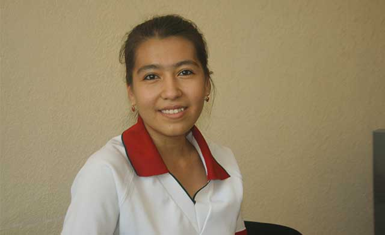

OMMAVIY SPORT TARG‘IBOTIDA MILLIY VA HORIJIY TAJRIBALAR UYG‘UNLIGI A.A. NAVRO‘ZOVA
Har qanday davlat o‘z istiqbolini sog‘lom va barkamol avlod timsolida ko‘radi. Mamlakatimizda amalga oshirilayotgan keng ko‘lamli islohotlar jarayonini, kuchli fuqarolik jamiyati va huquqiy demokratik davlat qurishdek ezgu maqsadlar ro‘yobini yoshlar ishtirokisiz tasavvur etib bo‘lmaydi. Istiqlol yillarida yoshlar masalasi davlat siyosati darajasiga ko‘tarildi.
Birinchi Prezidentimiz Islom Karimov rahnamoligida yoshlarning zamon talablari darajasida ta'lim-tarbiya olishi, sport bilan shug‘ullanishi, salomatligini mustahkamlashi, hordiq chiqarishi, o‘z kuchi, bilim va salohiyatini namoyon etishi, navqiron avlodning o‘qib-izlanishi, katta hayotga dadil kirib borishi uchun barcha sharoit yaratildi. Zero, jismonan sog‘lom, ma'nan yetuk, intellektual salohiyati yuqori, dunyoqarashi keng, mustaqil fikrlaydigan avlodni voyaga yetkazish va tarbiyalash davlatimiz siyosatining ustuvor yo‘nalishlaridandir.
O‘zbekiston Respublikasining “Ta'lim to‘g‘risida”, “Jismoniy tarbiya va sport to‘g‘risida”, “O‘zbekiston Respublikasida yoshlarga oid davlat siyosatining asoslari to‘g‘risida”gi qonunlari, “Kadrlar tayyorlash milliy dasturi” yoshlarimizga zamonaviy standartlar asosida ta'lim-tarbiya berish, ularning iqtidor va iste'dodini yuzaga chiqarish, ularni sog‘lom va barkamol etib tarbiyalash imkonini bermoqda.
Birinchi Prezidentimizning 2002 yil 24 oktyabrdagi “O‘zbekiston Bolalar sportini rivojlantirish jamg‘armasini tuzish to‘g‘risida”gi va 2004 yil 29 avgustdagi “O‘zbekiston Bolalar sportini rivojlantirish Jamg‘armasi faoliyatini takomillashtirish chora-tadbirlari to‘g‘risida”gi Farmonlari bu ishlarni tashkil etishda o‘ziga xos dasturilamal bo‘lib xizmat qilayotganini ta'kidlash joiz.
Bolalar sporti ta'lim-tarbiya sohasining uzviy qismiga aylandi. Uch bosqichli sport tizimi – “Umid nihollari”, “Barkamol avlod” va Universiada musobaqalari yoshlarni sportga keng jalb etish, professional sportchilarni tarbiyalashda muhim o‘rin tutmoqda.
Yurtimizda bolalar o‘rtasida sportni ommalashtirish, barcha shart-sharoit va imkoniyatlarga ega zamonaviy sport majmualari bunyod etish, ularni sport uskunalari va anjomlari bilan jihozlash bo‘yicha muayyan ishlar amalga oshirilmoqda. O‘tgan davr mobaynida jamg‘arma tomonidan mamlakatning barcha hududlarida sportni rivojlantirish uchun 1 trillion 76 milliard so‘mlikdan ortiq mablag‘ sarflandi, 1979 ta zamonaviy, muhtasham sport inshootlari barpo etildi.
Bolalar sporti ob'ektlari asosan mamlakatimizda ishlab chiqarilgan sport inventarlari va uskunalari bilan jihozlanmoqda. Bugungi kunda 120 turdagi sport inventarlari va uskunalarining 116 tasi mamlakatimiz korxonalarida ishlab chiqarilmoqda.
Mamlakatimizda qizlarni sportga jalb etish masalasiga ham alohida e'tibor qaratilmoqda. Ular uchun milliy mentalitetimizga xos kiyimlar ishlab chiqarilmoqda, ayol murabbiy va o‘qituvchilarni tayyorlashga keng o‘rin berilayotir.
Birinchi Prezidentimiz tashabbusi bilan har yili 8 mart – Xalqaro xotin-qizlar bayrami arafasida o‘quvchi qizlarga sport kiyimlari topshirilmoqda. Bu qizlar o‘rtasida sportning yanada ommalashishi, ularning sog‘lom, baquvvat va durkun bo‘lib ulg‘ayishida muhim omil bo‘lmoqda. Bugun yurtimizda 842 ming nafarga yaqin qizlar sport bilan muntazam shug‘ullanmoqda. 2012-2015 yillar davomida sport bilan muntazam shug‘ullanayotgan 812 ming 322 nafar qizlarga 15,1 mlrd.so‘mlik sport kiyimlari to‘plami “Prezident sovg‘asi” sifatida topshirildi.
Qishloqlarda yaratilgan sharoit tufayli sport bilan shug‘ullanayotgan qishloq bolalarining soni 2003 yildagi 14,7 foizdan 2014 yilda 45 foizgacha, shu jumladan, qiz bolalar ulushi 17,8 foizdan 38,9 foizgacha o‘sdi.
Xususan, 2005 yilda yurtimizda mutlaqo sog‘lom bolalar ko‘rsatkichi 52,7 foizni tashkil etgan bo‘lsa, 2014 yilda bu raqam 63 foizdan oshdi. Bugungi kunda bolalarimizning 92 foizi rivojlanish ko‘rsatkichlari bo‘yicha Jahon sog‘liqni saqlash tashkiloti standartlariga mos keladi va shubhasiz, bu biz erishgan katta yutuqlardan biridir. Bunday o‘sish sur'atlari globallashuv sharoitida havas qilishga arzigulikdir. Bugun mamlakatimizda 2 millionga yaqin bola sportning 30 dan ziyod turi bilan muntazam shug‘ullanmoqda. Bitta sport inshootidan o‘rtacha kunlik foydalanish vaqti 9,5 soatni tashkil etmoqda.
Xorijda bolalar sportiga munosabatni qiyosiy o‘rganish, ularning tajribalarini O‘zbekiston sportchilarini tarbiyalashda joriy etish, xalqaro maydonlarda yurtimiz sharafini himoya qiluvchi sportchilarni yetishtirishda tajriba vazifasini o‘taydi.
Masalan, Xitoyda bolalarni sport bilan muntazam shug‘ullanishlari uchun sport maktablariga davlat tomonidan alohida e'tibor qaratilgan. Bugungi kunda Davlat sport maktablari soni 15 mingdan ziyodni tashkil etadi. Minglab sport maktablari orasida o‘z o‘rniga va salohiyatiga ega ayrim maktablar bugun Chin yurtining haqiqiy iftixoriga aylangan. Olti yoshdan boshlab milliy sport iftixorlarini tarbiyalovchi Pekinning mashhur Shichixay maktabi butun dunyoga xitoylik atletlar dovrug‘ini tanitmoqda. Ushbu maktab 1990 yilgi Osiyo o‘yinlaridan so‘ng juda mashhur bo‘lib ketdi. Chunki ko‘pchilik g‘olib va sovrindorlar ushbu maktab tarbiyalanuvchilari edi. Bugungi kunda ushbu maktab Xitoyning barcha hududlaridan qobiliyatli bolalarni yig‘ib, yuqori malakali iqtidorli yosh gimnast, badmintonchi, stol tennisi ustalari, taekvondochi, bokschi, og‘ir atletikachi va tennischilarni tarbiyalovchi markaz sanaladi.
So‘nggi 25 yil ichida bu maktab yuqori sport natijalarini qo‘lga kiritish bo‘yicha mamlakatda yetakchilardan hisoblanadi. Har yili maktabga 1000 ga yaqin qobiliyatli xitoylik bolalar va 300 nafar chet ellik iqtidorli bolalar qabul qilinadi. Bolalar kuniga bir yarim soatdan 3 marta sport mashg‘ulotlarida qatnashadilar, qolgan vaqtda esa, to‘liq davlat ta'minoti ostida o‘qiydilar. Tarbiyalanuvchilar faqat yuqori natijalarni ko‘zlashadi, shuning uchun ham o‘zgacha shijoat bilan mashg‘ulotlarda ishtirok etishadi. Bolalar sport mashg‘ulotlari zallariga kirishlari bilan ularni g‘alabaga ruhlantiruvchi zarhal “金” (oltin) ieroglifini ko‘radilar.
Tabiiyki bolalar tanasining jismoniy rivojlanishi ularning kichik yoshlaridan boshlab olimpiya ta'limi tizimining ajralmas qismi bo‘lmish umumta'lim maktablaridagi jismoniy tarbiya darslarida ishtirok etishlari samarasi sanaladi.
Ushbu maktabining dunyoda juda mashhurligining yana bir tomoni xorijiy mutaxassislar bilan aloqa yaxshi yo‘lga qo‘yilganidir. Xitoy ta'lim vazirligi tomonidan murabbiy va o‘quvchilarni xorijning yirik sport maktablarida tajriba almashishiga doir maxsus qaror qabul qilinishi ham yutuqlar garovi bo‘lmoqda. Ushbu dasturga asosan sport maktablari, federatsiyalar va markazlarning ko‘plab mutaxassislari har yili turli davlatlarda bo‘lib sportning nozik sirlarini o‘rganib qaytishsa, mamlakatga taklif etilgan mutaxassislarning tajribasini sinchkovlik bilan o‘rganishadi.
O‘zbekistonda ham dunyoga tanilgan, sport ustalarini tarbiyalayotgan ixtisoslashtirilgan sport maktablari faoliyat yuritib kelmoqda. Bular jumlasiga qilichbozlik, shaxmat, badiiy gimnastika, tennis, futbolga ixtisoslashtirilgan maktablarni misol keltirish mumkin.
Ixtisoslashgan maktablarning mavjudligi bizning yutuqlarimiz garovi. Lekin, maxsus sport maktablarga iqtidorli bolalarni jalb etish, bolajon o‘zbek mentaliteti sababli farzandlarini ko‘z ostidan uzoqqa yuborishni xohlamaydigan ota onalarning qaysarligi, birmuncha qiyinchiliklarni yuzaga keltirish holatlari mavjudligi sababli yanada ko‘proq iqtidorli bolalar olimpiya zahirasiga olinmay qolmoqda.
Mamlakatimizdagi va xalqaro musobaqalarda g‘oliblikni qo‘lga kiritgan sportchilarimizdan g‘alabalari sabablari va kelajakdagi orzulari haqida so‘ralganda, hammalari “O‘zbekiston barog‘ini yuqori ko‘tarilishi”ga harakat qilishini bildiradi.
Bu javoblarni sport bilan shug‘ullanishga qiziqqan bolalarimizga qaratilgan targ‘ibot sifatida sog‘lom turmush tarzini shakllantirish yo‘lida foydalanish, har birimizning vazifamizga aylanishi lozim. Dunyoda eng noyob boshqaruv organ sanalmish Mahalla instituti, Kamolot YoIH faollari joylarda birinchi targ‘ibotchi sifatida faoliyat yuritsalar, sport maktablarining murabbiylari va uslubchilari ushbu vazifani amalga oshirishda yetakchilikni qo‘llariga olishlari va yo‘naltiruvchi bo‘lishlari, sport zallarida targ‘ibotning samarali usullarini joriy etishlari, har bir sport bilan shug‘ullanuvchi shunchaki emas - astoydil, chin yurakdan “O‘zbekiston bayrog‘ini yanada yuqori ko‘tarilishi”ga harakat qilishiga erishishimiz lozim.
Bolalar sportini davlat tomonidan rag‘batlantirilishi va qo‘llab quvvatlanishi, unga qaratilayotgan e'tibor o‘z natijasini namoyon etmoqda. Hozirda millatimiz sha'nini munosib himoya qiluvchi avlod shakllandi